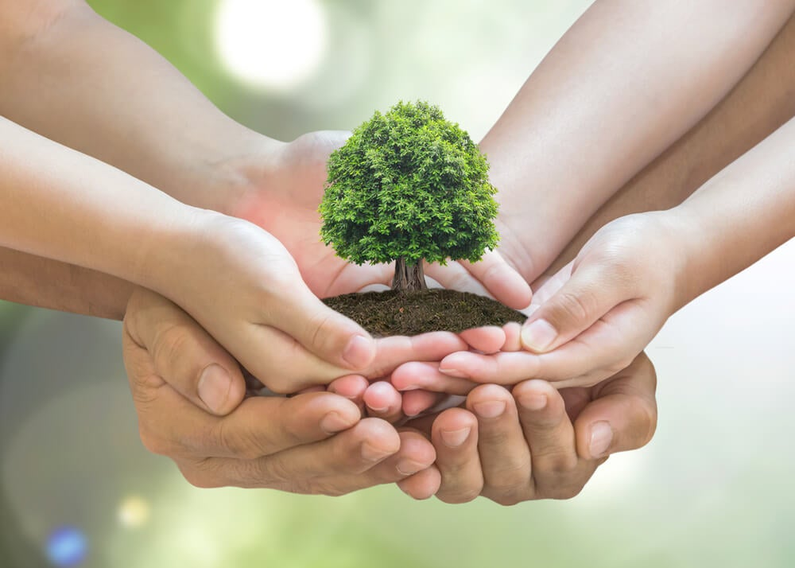

¿Quienes Somos?
Somos independientes de cualquier ideología política, religión, interés económico u organización. Somos personas preocupadas por el deterioro ambiental y poseemos la firme convicción de que en cada uno de nosotros está la respuesta para revertir esta situación y bregar por una mejor calidad de vida. Nuestra visión es un mundo que se desarrolla de manera sostenible y solidaria. Nuestro lema es: No olvidar la pequeña fábrica que tenemos en nuestra casa que nos permite obtener alimentos sanos y abundantes, aprender a ser responsables con la energía y el agua que consumimos, desarrollar buenas prácticas ambientales e integrarnos socialmente. Para cumplir este objetivo y crear un futuro sostenible juntos, nuestro trabajo está enfocado en los pilares siguientes: Investigación, desarrollo de proyectos y educación.
Tú tambien puedes ayudar
Salva el planeta
Evita los plásticos de un solo uso utilizando bolsas de lona o botellas reutilizables que ayuden a reducir la contaminación por plásticos. Opta por reutilizar y evita los utensilios de plástico en tu restaurante favorito. Y en caso de ser posible, recicla.
Ahorra energía
Reemplazar una bombilla incandescente por una lámpara fluorescente compacta puede ahorrar alrededor de 150 libras de dióxido de carbono por año. La iluminación artificial representa el 44% del consumo de electricidad en edificios de oficinas. Apaga las luces al salir de cualquier habitación y utiliza luz natural cuando puedas.
Evita despilfarrar
Un grifo que gotea y llena una taza de café en 10 minutos desperdiciará aproximadamente 3,000 galones (11,300 litros) de agua por año. Elige pinturas poco tóxicas que sean bajas en compuestos orgánicos volátiles o COV, los cuales pueden irritar los pulmones y causar reacciones alérgicas.